Card Rogue
Rulebook v1.1.2

About the game
Card Rogue is a tribute to the classic Rogue dungeon crawling game. Rogue was a computer game released in the 1980’s that featured many of the aspects that are present in this game; tributes to Rogue are appropriately named roguelike video games. Unlike other roguelikes, Card Rogue is playable with a group of friends and away from the computer.
Card Rogue is a challenging game that requires an equal amount of luck and skill. One to four players try to survive the mysteries of the dangerous catacombs. The game board is randomly created as the players make their way down uncertain paths. Thus, every game is different and requires a unique approach.
To survive, a player must be lucky, adaptable, and tactical. Traps, enemies, loot, or fame are met around every corner. Players must sometimes ally together, but other times they must betray that trust. Only the strongest and smartest will make it out alive.
The story
Stories tell of an ancient cult of sorcerers. Desiring power, they once conjured dark magics that spread fear throughout the land. Great heroes were summoned to drive back the sorcerers. As a countermeasure, the sorcerers sculpted a giant clay golem and used their magic to bring it to life. Though none of the heroes were able to defeat the monster, their perseverance forced the sorcerers to hide underground. Though the darkness was suppressed, the catacombs were never discovered.
History turned into legend and the catacombs were all but forgotten. That is, until the caravan of a debt-ridden merchant collapsed through the ground. The merchant found himself trapped in a labyrinth of underground passageways. He dared not wander from where he fell, as the passages were riddled with horrific monsters and deadly traps.
The cave-in was soon discovered, and a ladder was lowered to the merchant. He told the local village of what he discovered and vowed to aid any explorer willing to enter. Word spread across the kingdom, and fame-seeking mercenaries began to enter the underground lair. Will you face your fears and enter the catacombs? Will you bring home stories of great deeds and moments of glory? Or will you fall to the darkness that awaits you below?
About the rulebook
Card Rogue is a game about exploration and discovery. This means the rulebook can be a bit intimidating. Players are encouraged to read the rulebook and play the game in unison. Start by reading the Goal of the game and Setting up the play area sections. The rulebook will explain a part of the game, and the players should play up to that point. The sections should be used as a reference when new cards are introduced, or when players aren’t clear about certain rules or game mechanics.
Often times, the simple descriptions given in the rulebook are not enough detail. At the end of the rulebook is a Clarifications section. Many terms in the rulebook are underlined. This means further explanations can be read in the Clarifications section. Additionally, players can look up specific card descriptions for further clarification.
Starting the game
Goal of the game
Playing with friends
Card Rogue is meant to be played by a group of friends. The game includes enough player-tokens and character cards for four players, but more players can be added using enough creativity.
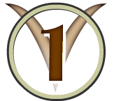The goal of the game is to gain the most victory points. Victory points are awarded for completing certain goals that are outlined at the end of the rulebook. The winning player is the one who has the most victory points when the game ends. Although the players are competing, they must also work together to complete some of the challenges. An intelligent player knows when to help his friends, and when to betray them. Many of these challenges are far too difficult to face when the game begins. To overcome these challenges, players will explore the catacombs for better equipment and magical items.
Playing by yourself
A single person can casually play the game by himself. The player should decide which of the goals he wants to accomplish before starting the game. Perhaps the player is only interested in fulfilling a single goal. Perhaps he wants more of a challenge, and decides to complete all the goals. In order for the single player to succeed, he must accomplish all designated goals and leave the dungeon safely without dying. Single player rules are meant to be modified to the preference of the player. A player can modify certain in-game rules to better fit his playing pleasure.
Story mode
As a separate form of play, a single player can play using the story mode rules. Story mode is a version of the game that has a predefined dungeon to explore. The experience is more like a puzzle, as players will need to learn the perfect set of moves to make it out of the dungeon alive. Each level of the dungeon is prefaced with a story that unfolds the mystery of the dungeon.
After reading the Story Mode Rulebook, play the first campaign: A Son’s Descent.
Players may also submit their own story mode campaigns, called community challenge maps. Players can compete for a high score on a challenge map by seeing who can discover the quickest way to complete the challenge. Read more about how you can get involved in the Story Mode Rulebook.
Setting up the play area
Remove extra cards
Card Rogue comes with a few spare cards, in case some get lost, and a few cards only used in Story mode. Before beginning normal play, remove the descending ladder card from the starting tiles, and all spare cards from the different decks.
Arrange the cards
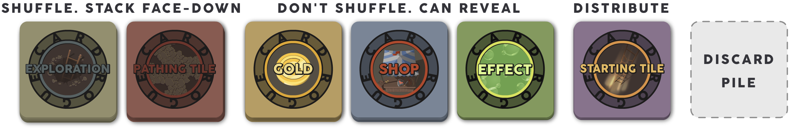To start the game, players should gather around a large table. Shuffle the exploration cards and place them face-down in one stack. Shuffle the pathing tiles and place them face-down in another stack. All gold cards, shop cards, and effect cards should be placed in separate piles. There should also be an area reserved for a discard pile. The remaining cards are the starting tiles. Each player should take one of these tiles. The rest can be discarded.
The deciding roll and characters
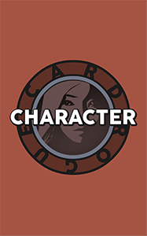Once everything is set up, each player rolls the die. Whoever rolls the highest gets to start the game. The starting player picks one of the character cards, and a player-token. The next player, to the left of the starting player, picks next, and the order continues clockwise.
Every player plays the game the same way. The character cards, however, give each player unique traits that are expressive of that character.
If a player chooses the Mage as a character, he should also take the cooldown effect card from the effect cards deck.
Convenient Cards
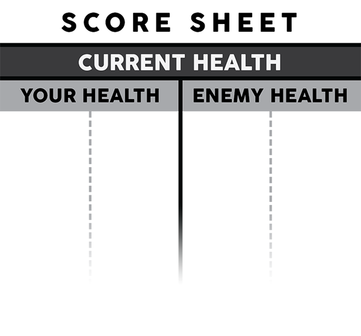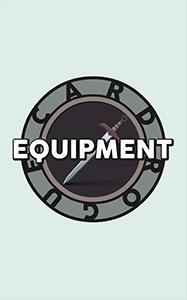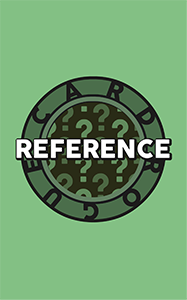Once every player has chosen a character card, they should each take a pen or pencil and a score sheet, which they will update as the game progresses. Unless specified, each player starts with 10 maximum health. This should be recorded on the score sheet. Every player starts with no change to the attack roll, and a score of 0. You can download the score sheet as a pdf from the Print page.
Each player should also take an equipment card. Players will use this card to keep track of equipped weapons and armor.
Finally, players should take a Reference card.
First move
The game begins with the starting player placing his starting tile, face-up, on the table in front of him. This should be placed as close to the player as possible, so that one path on the starting tile would lead off of the tabletop surface. That path is not explorable and is treated as a wall. The player places his player-token on the starting tile.
The next player begins by placing four exploration cards, face-down, in a tight line to the left of the starting player’s starting tile. These cards keep the game in a tight grid, and separate the players in the beginning. Next, he places his starting tile down following the four exploration cards, and places his player-token on it. All players follow likewise, connecting all starting tiles with face-down exploration cards.
Depending on the layout of the players and the shape of the tabletop, players may need to deviate from this pattern. Whatever pattern is chosen, each starting tile needs to be at least four exploration cards away from each other. The game must keep a grid-like shape. Players can only place a card to the left, right, top, or bottom of another card.
Additionally, all edges of starting tiles should have a face-down exploration card next to it, excluding the edge that is against the edge of the tabletop.
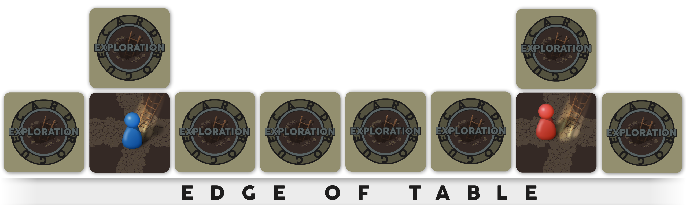Turns
Standard turn sequence
Once the initial setup is completed, the regular game sequence begins. Each player is presented with a sequence of operations that he may perform during his turn. The standard turn sequence steps are:
- Flip adjacent cards: The player may flip over face-down exploration cards that are adjacent (directly up, down, left, or right of) his current tile. The player may flip over any or all adjacent cards in one turn, but must interact with the following cards when they are flipped over:
- If the card is a trap, the trap is triggered and inflicts the player.
- If the card is an artifact, he must pick up the card, and replace it with a Pathing tile.
- If the card is an enemy, the player enters combat.
- Move: The player may move his player token onto an adjacent face-up card that is not occupied by another player or enemy.
- If he moves onto a trap, the trap is triggered and inflicts the player.
- If he moves onto a potion, he MUST pick up the card, and replace it with a Pathing Tile.
- If he moves onto a shop, he may buy and sell with the shopkeeper.
- If he moves onto a fountain of healing, he will interact with it at the start of his next turn.
- Interact: If the player moves adjacent to an enemy, the player enters combat. Otherwise, if a player is adjacent to another player, he may interact with that player.
- Place exploration cards: The player places face-down exploration cards on his current pathing tile if paths lead to unexplored areas.
If the only action taken by the player was to move his player token, and the player did not interact with another card or player, he may repeat his turn from step 2. Once a player’s turn is over, the next player takes his turn.
Walls and paths
Pathing tiles are represented as stone paths of a face-up card. Pathing tiles can be flipped over (face-up) exploration cards or cards from the pathing tile stack. Each pathing tile has a certain number of paths, ranging from 1 to 4, leading off of the edges of the card. When a player moves onto a pathing tile, he lays exploration cards face-down next to any path on that tile that does not lead to an already placed card. All edges of pathing tiles that do not have paths are walls. If one pathing tile leads to another pathing tile that has no connecting edge (because it is a wall), then that edge is counted as a wall. Players cannot move through a wall to an adjacent tile.
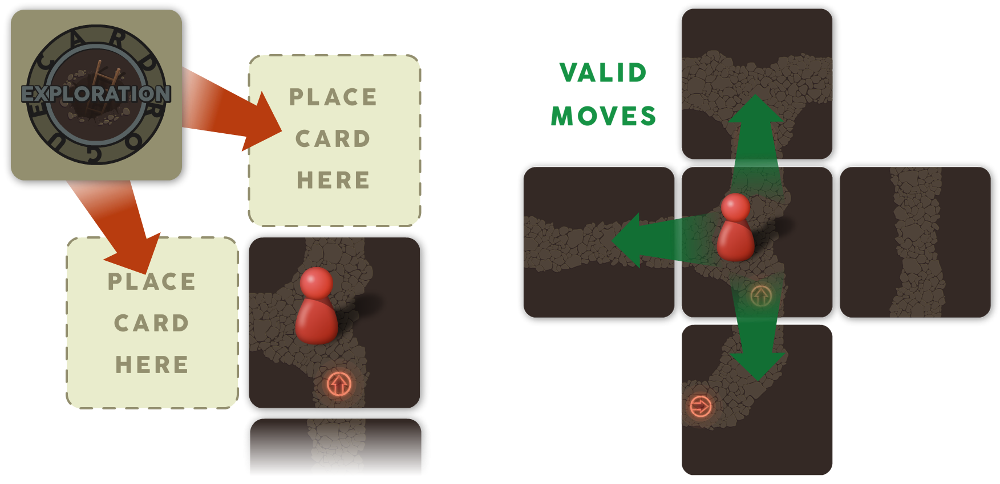When a player flips an exploration card to reveal a pathing tile, he should rotate the tile so its paths connect with his current tile's path. Pathing tiles that have a red arrow should be rotated such that the arrow is pointing away from the tile the player is currently standing on.
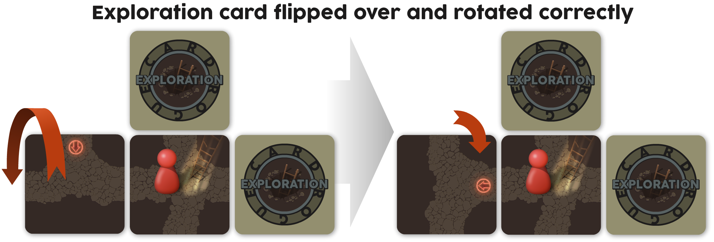Combat
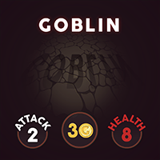When a player flips over an enemy, or a player moves to an adjacent tile of a revealed enemy, that player must enter combat with the enemy. Entering combat starts the combat turn sequence, and the standard turn sequence for that player is skipped until after he leaves combat.
Combat Turn Sequence
- Roll for attack or flee: The player rolls a die. This is called an attack roll. The player will deal the rolled amount to the enemy’s health after applying any attack modifiers. The enemy’s starting (max) health is listed on the enemy card.
Instead of rolling an attack roll, the player may attempt to flee. Read the following section for more information.
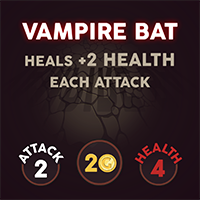
- Apply enemy ability (if any): If the enemy has a special ability that require a die roll, roll for this ability. Apply the ability if the roll matches the ability's required roll, or if the ability does not require a roll. Ability descriptions can be found in the Clarifications section. Look up the ability itself, and not the name of the enemy.
- Enemy attacks: The enemy will attack the player. The player will lose health equal to the attack amount listed on the enemy card after applying any defense altering effects.
A player keeps track of his current health and the current health of the combating enemy on the score sheet. If neither the player or enemy are slain during this turn, the player ends his turn and must start the combat turn sequence again next turn. If the player is affected (by paralysis or poison) those effects will continue during the start of the next combat turn sequence. If the player loses all his health, he dies. If the enemy loses all his health, he is slain.
Fleeing from an enemy
During the player’s turn of the combat turn sequence (step 1), he can choose to flee instead of attacking by announcing that he is attempting to flee. The player rolls a die. If the player rolls a 1, 2, or 3 the player failed to flee and the combat turn sequence will continue at step 2. Otherwise, he can flee from an enemy by moving his player token to an adjacent tile away from the enemy. Players may perform other actions while fleeing. Refer to Flee in the Clarifications section.
If a player successfully flees from an enemy, the player and enemy will leave combat and the player can resume his Standard Turn Sequence at step 4, and the enemy's health will be completely restored.
Slaying an enemy
When a player slays an enemy, the player places the enemy card into his hand. Each enemy card has a gold amount, this is the enemy’s loot. The card is treated like gold, and can be used to buy items in the shop, or trade with other players. If two players are attacking an enemy, the player who dealt the last attack takes the enemy card.
When the enemy card is picked up, it should be replaced with a face-up pathing tile drawn from the pathing tiles stack. The player may now resume his Standard Turn Sequence at step 2 if he flipped over the enemy card, or at step 4 if he moved adjacent to the enemy.
Player dies
When a player’s health is reduced to 0 (or below) that player is dead. However, this does not mean game-over for that player. The player places his player token on any one of the starting tiles. He keeps one card of his choosing. If he still has cards, he places one card face-down on the tile he died on. All remaining cards in his hand that cannot be sold (with a crossed-out gold amount symbol) are placed face-down on the tile he died on. All other cards are discarded.
The player's attack roll and max health are reset to their starting values. The player ends his turn and waits for his next turn to start over again. The first player to move onto the tile with the face-down cards reveals the cards and puts them in his hand.
Interacting with other players
If a player is not in combat, he may interact with another player on his turn. Some interactions benefit both parties, and some will betray your friend’s trust. A player can only interact with another player that is on an adjacent tile.
Trading
A player may trade with an adjacent player. The two players may trade the cards in their hands, but only cards that have a trading symbol. Players cannot trade if they are in combat.
Tripping
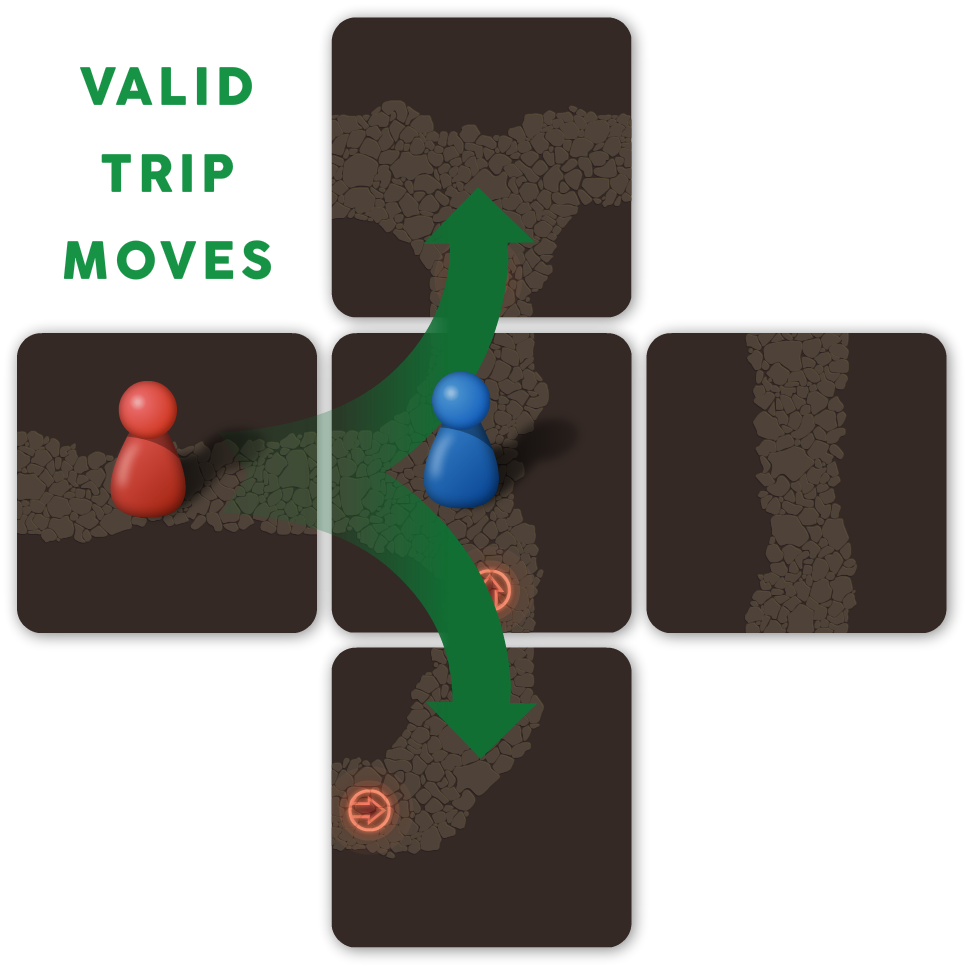A player may attempt to trip an adjacent player. On his turn, the player can roll a die. If he rolls a 4, 5, or 6 he successfully trips the player. This means the tripped player loses his next turn, and the other player may leap over the tripped player’s token to one of that player’s adjacent tiles. This is useful if a player is blocking a path, or if two players are racing to a certain tile.
A player may attempt to trip another player who is in combat. If the roll is successful, the player in combat loses his next turn while remaining in combat. If the roll fails, the player in combat performs an attack roll: dealing the attack roll plus attack modifiers’ damage to the player who attempted to trip him.
Stealing
A player may attempt to steal from an adjacent player. On his turn, the player can roll a die. If he rolls a 6 he may pick a random card from the other player’s hand. Equipped cards cannot be stolen.
Surround an Enemy
This interaction does not follow the normal interaction rules. Two (or more) players may attack a single enemy at once. Both players must be on separate adjacent tiles to the enemy. Each player will be in combat with the enemy and may attack on his turn.
The enemy, will only attack the first player to enter combat with him. All other players attacking an enemy can flee without rolling and do not trigger the enemy's ability if the enemy has one. If the player who is being attacked by the enemy flees, the enemy will then turn to attack the next player who entered in combat. This is true even if the fleeing character returns to attack the enemy. When an enemy dies, the player who dealt the last damage to that enemy takes the enemy card as loot.
Tiles
Traps
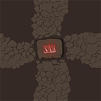When a player flips over a trap card, he is immediately affected by the trap. The trap will only affect him once when it is flipped over (i.e. even if a player remains on his tile, it will not trigger again). If a player or enemy moves onto a trap after it has been revealed, he will trigger the trap's effect. The trap will only affect him once while he remains on the tile. Every time a player or enemy steps on a trap again, it will trigger again.
There are three types of traps:
- Spike Trap: The player or enemy will lose 2 health.
- Paralysis Trap: An effected player ends his turn and skips his next turn. If an enemy is moved on the trap, he will be unable to attack or apply combat effects for a turn.
- Poison Trap: An effected player or enemy loses 1 health, at the beginning of each turn, for 2 turns.

The fountain of healing
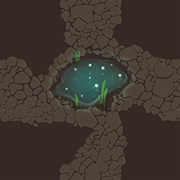Exploration may reveal a fountain of healing. At the beginning of a player’s turn, if he is on the Fountain of healing tile, he will roll a die. If he rolls anything but a 6, he is healed 2 health. If he rolls a 6, the fountain is drained. The fountain is then discarded and replaced with a pathing tile. The fountain may be used each turn by any player standing on it, until it is drained.
The Shop
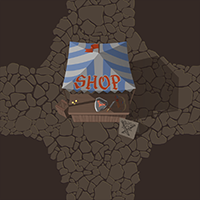A player may reveal a shop card while exploring. If a player moves onto the shop tile, he may purchase and sell cards with the shopkeeper. Any card that has a gold amount can be sold to the shop for the given amount. The shop sells cards from the shop cards pile. All cards bought from the shop cost twice as much gold as is indicated on the card. In other words, the sell price is half of the purchase price.
Buy and Sell
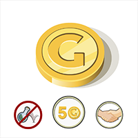To buy or sell a card, a player must be on the shop tile. To sell a card, discard the card and pick up gold cards equal to the gold amount listed on the card. To buy a card, take the card from the shop pile and discard as many gold cards, or cards with a gold amount, equaling or exceeding twice the gold amount indicated on the desired card. If the player paid more for the item than twice the given amount, the player picks up the remainder in gold cards.
A player may sell and buy multiple cards during a single turn.
Items
Certain cards in the game display symbols at the bottom of the card. These symbols can also be crossed out. If this is the case, it means the item cannot be used in such a way.
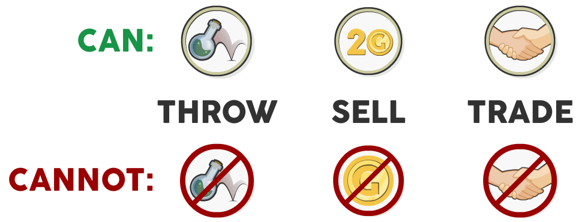- The throw symbol means that an item may be thrown on an adjacent enemy or player. See throw for more details.
- The gold amount symbol shows how much an item can be sold for at the shop. If the symbol is crossed out, the item cannot be sold or discarded.
- The trade symbol means that this item can be traded with another player. If the symbol is crossed out, a player may still steal that item.
Scrolls
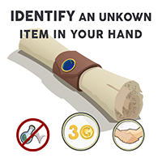Scrolls can be purchased from the shopkeeper for twice the indicated gold amount. Scrolls can be used anytime during a turn, but once used they must be discarded. A scroll can only affect the player who uses it.
Weapons and Armor
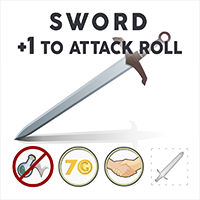 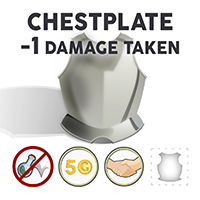Weapons and armor can be purchased from the shopkeeper for twice the indicated gold amount. Each weapon and armor has a special property given on the card. This property is only applied if the weapon or armor is equipped. To equip an item, a player lays the card face-up on the equipment card slot that matches the equipment symbol given on that card. Only one item can be equipped for each slot.
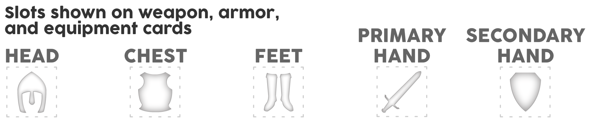Artifacts
Discovering an artifact
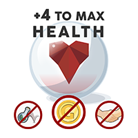Artifacts are any items that cannot be sold and cannot be traded. An artifact must be placed in the hand of the player who discovered it. Once picked up, it should be replaced with a pathing tile.
An artifact cannot be removed from a player's hand unless a scroll of remove all your cursed items is played or the artifact is stolen. A player can have multiple artifacts in his hand.
Properties of an artifact
Artifacts provide permanent effects to a player as long as the player has the artifact. The effect is immediately applied when the card is picked up.
The artifact’s effects are listed on the artifact card, but a detailed explanation of each effect can be found in the Clarifications section of the rulebook.
Potions
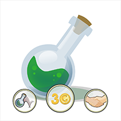A potion is any card that shows a picture of a potion. Potions are picked up by the first player who moves his piece onto the potion tile. It is placed in the hand of that player, and replaced with a pathing tile.
A potion can be drunk (used on self), or thrown on an enemy or another player. Potions can be drunk or thrown at any time on a player’s turn. Multiple potions can be used in one turn. Once a potion is used, it must be discarded from the player’s hand.
Properties of a potion
Potions provide either temporary or permanent effects. These effects are only applied to the player who drank the potion, or to the player or enemy the potion was thrown on. The potion immediately take effect on the player/enemy once drunk or thrown.
Potions start out with an unknown effect. Once the potion is used its effect is revealed. All remaining potions in the game with the same potion color have that same effect. A player may write the potion’s identity on the score sheet to help remember which potions have been identified. Roll the die to discover the potion’s property:
- Potion of Healing: restore health to max health
- Potion of Poison: lose 1 health, at the beginning of each turn, for 3 turns .
- Potion of Strength: +1 to attack roll. Update attack roll on score sheet.
- Potion of Weakness: -1 to attack roll. Update attack roll on score sheet.
- Potion of Teleportation: move to any pathing tile and end turn.
- Potion of Paralysis: end turn (if it is the player's turn) and skip the next turn.
If a number is rolled, but another potion color already has that effect, the player must re-roll so that each potion color has a different effect.
Potions can also be thrown on an adjacent enemy or player. Read in the Clarifications section about each potion for further information about how the potion works when thrown, or how it works in special circumstances.
Goals
The goal of the game is to gain the most victory points. Victory points are awarded for completing certain goals that are outlined below. The winning player is the one who has the most victory points when the game ends.
The chest and key
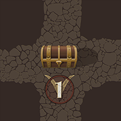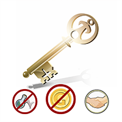As players are exploring the passages, they may discover a locked chest. Hidden inside is, most certainly, secrets about the ancient cult of sorcerers that built these passageways. The player who unlocks the chest will be awarded a victory point for his discovery. The chest, however, can only be opened by the key. When a player finds the key card, he places it into his hand. When that player moves onto the chest tile, the key card is discarded and the player is awarded a victory point to be recorded on the score sheet.
The key may be stolen by another player, but once the chest is opened the victory point remains with the awarded player.
The shopkeeper’s debt
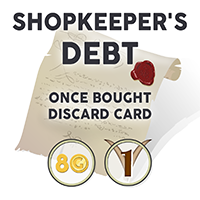One of the items that can be bought from the shopkeeper is his debt. Once bought, the debt is removed from the game, and the player who purchased it is awarded a victory point to be recorded on his score sheet. This victory point cannot be stolen.
The bosses
There are three bosses in the game. Bosses are enemies that are extra tough. They should be strategically approached, and will usually require the cooperation of players to defeat. When a boss is defeated, the player who dealt the finishing damage takes the boss card, which awards the amount of victory points indicated on the card. This card cannot be sold, traded, or otherwise discarded. It can, however, be stolen by another player, along with the victory point that is associated with that card.
The basilisks
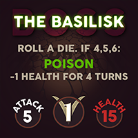The basilisks are two mini-bosses that award a victory point each. The victory points associated with these bosses have special rules. Both basilisk cards cannot be in one player’s hand. If at any time both cards are owned by one player, they are discarded from the game, and no victory points are awarded.
The golem
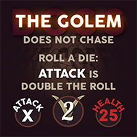The golem remains alive as a testimony that the stories of the sorcerers are true! The player who rids this monster from the catacombs will be awarded two victory points. These points are connected to this boss card. This card can be stolen by other players during the end rush.
The end rush (2+ Players only)
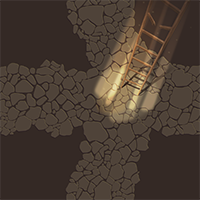When the the golem is slain and the card is taken by one of the players, it is a race to the surface to share stories of glory to all that await the players’ return. Players make their way back to any exit (starting tile). Potions of teleportation have no effect during this stage of the game, and any player that dies does not reenter the game. Once a player reaches the starting tile, that player is awarded an extra victory point, to be recorded on the score sheet, and the game is over.
Game over scoring (2+ Players only)
The winner of the game is decided by tallying each player’s victory points. Certain cards have victory points can be stolen during the game. The victory points are awarded to the player who holds these cards when the game ends. The player with the most victory points is announced the winner.
Exceptional Rules
Quitting a game early
A player may want to a quit a game early. There are several possible ways to proceed if this occurs:
- If a player rage quits (quits because he becomes too frustrated), the player dies. All of his equipped cards and cards in his hand are placed face-down on the tile the player died on.
- If a player must temporarily leave the game, the other players may either wait for his return or the player is removed from the tiles. The game continues without the player. When the player returns, he is placed back on the same tile he was removed from. If another player is on that tile, he must wait for that player to move off the tile before returning.
- If a player must leave for the entirety of the game, the player dies. All of his equipped cards and cards in his hand are placed face-down on the tile the player died on.
These rules can be modified by the other players as circumstances require.
All pathing tiles lead to dead ends
If a player is unable to lay new tiles, meaning all pathing tiles lead to dead ends or loops, the player can call on the aid of the mole. The mole can instantly replace any pathing tile with a 4-path pathing tile that can be searched for through the pathing tile stack (shuffle the stack once looked through). His services cost 10 gold. A player may sell any of his sellable items to the mole if he does not have enough gold to pay for the mole's services. If the player still does not have enough gold, the mole takes all the player’s cards, excluding the unsellable cards, and aids the player.
A player does not need to call on the aid of the mole; however, if all players are unable to lay new tiles, there are only two options: 1)either one, or multiple players, call on the aid of the mole, or 2) the game enters the end rush.
There are no more Exploration Cards or Pathing Tiles in the stack
When all tiles are laid, the game does not end. The Golem must still be slain in order to start the end rush. If players don't dare fight the Golem, or cannot defeat the Golem, all players forfeit the game. There may be face-down exploration cards that are unreachable. Players may reuse these cards when the stack runs out.
Teleporting or moving to a tile, but turn is ended
A player can move, or be moved, to another location on the board when it is not his turn (the Potion of Teleportation and the scroll of Move to any adjacent tile cause this event). When this happens, the moved player does not flip over tiles, pick up cards, enemies do not attack him, and traps do not trigger until the beginning of that player's turn. If an enemy is teleported adjacent to a player, the same rules apply.
Attack roll modifier + other attack modifiers
The attack roll modifier is always applied after all other attack modifiers.
Other exceptions
There are other possible exceptions to the game. When it is unclear what to do in an instance, make sure to read the Clarifications section carefully. If it is still unclear, try to rationalize what a possible rule would be. Exceptions must always favor the player who is being afflicted.
Updates from previous versions
From v1.1.1
- Grammatical corrections.
- Several small clarifications.
From v1.1
- Added a box content section.
- Strength and weakness potion now have same effect when thrown on player or enemy.
- Dying during end rush does not grant player the end rush victory point.
From v1.0
- Paralysis now ends the player's turn, and skips his next turn.
- Players may move twice in a turn if no other actions or interactions were taken.
Clarifications
When looking up clarifications about certain cards, look for the card descriptions and not the name of the card. Terms that start with symbols (+, -) are found at the end of this index.
Adjacent tileAn adjacent tile is any tile that has a path leading directly to it from the current tile. Players may not interact with, enter in combat with, move to, or pick up cards that are not on an adjacent tile.
An adjacent card must be one tile left, right, up, or down from the current tile.
Armor
Read the Weapons and Armor section in the rulebookSee Boots, Chestplate, Hasty Boots, Helm, Shadow cape, Shield, and Vision Lens
Armor slotAll slots on the equipment card, excluding the Primary hand slot.
See Head slot, Chest slot, Feet slot, and Secondary hand slotArtifact
Read the Artifacts subsection in the Items section of the rulebookAttack again
See Rolling an X: attack againAttack is double the roll
See Roll a die: attack is double the rollAttack misses
See Rolling an X: attack missesAttack rollWhen a player is in combat, during his combat turn sequence, he rolls a die to determine his attack amount. This is called the attack roll. Damage is dealt to the enemy equal to the attack roll after other effects have been applied. Effects do not modify the player's actual roll, just the attack amount.
BardOne of the six character cards available to play. You may download a replacement of this character card to print or view as a reference.
Basilisk (The)
Read The Bosses subsection in the Goals section of the rulebookRead the Combat subsection in the Turns section of the rulebook
See Roll a die: if X: paralyze for Y turns, and Roll a die: if X: Poison -1 Health for Y Turns
Battle Axe
Read the Weapons and Armor section in the rulebookSee Min. Attack: X
Block enemy's attack this turn
See Rolling an X: Block Enemy's attack this turnBody slot
See Chest slotBoots
Read the Weapons and Armor section in the rulebookSee -X damage taken
Boot slot
See Feet slotBoss
Read The Bosses subsection in the Goals section of the rulebookBuyWhen a player is on a shop, he may buy and sell items. He can sell any item in his inventory for its given gold amount. He may buy any item from the shop for twice the price indicated on the item’s card. Once he buys an item, he places it in his hand.
See Sell, Shop, and TradeCan Flee
See Roll a die: if X: can fleeCan avoid Trap
See Roll a die: if X: can avoid trapCave bat
Read the Combat subsection in the Turns section of the rulebookCharacter cardEach player chooses a character card at the beginning of the game. There are six characters: the Warrior, the Rogue, the Cleric, the Explorer, the Mage, and the Bard. Each character has two positive traits, and one negative trait. Once the game starts, a player may not trade his character card.
Chest
Read the The Chest and Key subsection in the Goals section of the rulebookChestplate
Read the Weapons and Armor section in the rulebookSee -X damage taken
Chest slotOne of the armor slots on the equipment card. A single card with the matching chest slot symbol can be equipped by placing this card on the chest slot on the equipment card.
ClericOne of the six character cards available to play. You may download a replacement of this character card to print or view as a reference.
CursedCursed items are indicated on the item’s card. If an item is cursed, it cannot be removed from the player’s hand, unless a scroll of remove all cursed items from your hand is played. In this case, all cursed items in that player’s hand are discarded.
Dagger
Read the Weapons and Armor section in the rulebookSee Rolling an X: reroll twice
Damage Taken
See -X damage takenDeath (player dies)When a player’s health is reduced to 0 (or below) that player is dead. Read more in the section: Player Dies.
Read the Combat subsection in the Turns section of the rulebookDescending ladderA card in the starting tiles deck represented by a ladder descending into a hole. This card is only used in story mode.
Dodges player's attack
See Roll a die: if X: Dodges player's attackDoes not chaseAn enemy with this ability will not chase a fleeing player. Therefore, a player can flee without needing to roll.
See FleeDouble DamageAttack is double the attack roll before other attack modifiers are applied.
Effect cardIn order to keep track of effects that last longer than a single turn, players may use an effect card. The effect card should be rotated as needed to indicate to the player the amount of turns he has left under the effect.
The cooldown effect card is a card specifically used by the Mage to keep track of spell cooldown.End rush
Read the End rush subsection in the Goals section of the rulebookEnemyAny card that a player may flip over that has attack and health.
Read the Combat subsection in the Turns section of the rulebookEquipment CardPlayers may use this card to keep track of equipped weapons and armor. To equipped an item, that player should place the card onto the appropriate slot on his equipment card. Two items cannot exist on the same slot.
Exploration cardWhen a player moves onto a pathing tile that has paths leading onto an empty spot on the table, the player places an exploration card on that empty spot face-down. At the start of the player's turn, he may flip over exploration tiles to reveal that card.
ExplorerOne of the six character cards available to play. You may download a replacement of this character card to print or view as a reference.
Feet slotOne of the armor slots on the equipment card. A single card with the matching feet slot symbol can be equipped by placing this card on the feet slot on the Equipment Card.
FleeTo leave combat a player may attempt to flee by rolling a 4,5, or 6. If the roll was successful, the player moves to an adjacent tile and is no longer in combat. Alternatively, a player may flip over adjacent face-down exploration cards in an attempt to move away from the enemy. However, if a player flips over an enemy, or moves adjacent to another enemy, the player reenters combat. When a player is adjacent to multiple enemies, he is in combat with those enemies. The player picks one enemy to perform step 1 of the combat turn sequence, but steps 2 and 3 are applied for all enemies to that player.
Read the section, Fleeing from an enemy for more details.
Fountain of healing
Read The Fountain of Healing subsection in the Tiles section of the rulebookGoblin
Read the Combat subsection in the Turns section of the rulebookGoldGold is the currency used in the game. Items and loot can be bought and sold for a gold amount at the shop. Any leftover gold from shop transactions can be drawn from the Gold card pile.
Gold cardWhen a player sells items at the shop, he picks up Gold cards equal to total gold amount of the items and loot sold.
Golem (The)
Read The Bosses subsection in the Goals section of the rulebookRead the Combat subsection in the Turns section of the rulebook
See Roll a die: attack is double the roll
Hasty Boots
Read the Weapons and Armor section in the rulebookSee +X Movement. Must be out of combat
Head slotOne of the armor slots on the equipment card. A single card with the matching head slot symbol can be equipped by placing this card on the head slot on the Equipment Card.
Heals +X health each attackAn enemy with this ability will heal his current health X amount each turn.
HealthPlayers and enemies have health. When an enemy’s health is reduced to 0 (or below), the player who inflicted the finishing damage places the enemy card in his hand. When a player’s health is reduced to 0 (or below) that player is dead.
See DeathHelm
Read the Weapons and Armor section in the rulebookSee -X damage taken
Helm Slot
See Head slotIdentify an unknown item in your handThis scroll can be used to identify a single unknown item from the player’s hand.
See ScrollImp
Read the Combat subsection in the Turns section of the rulebookSee Roll a die: if X: Dodges player's attack
Key
Read the The Chest and Key subsection in the Goals section of the rulebookKobold
Read the Combat subsection in the Turns section of the rulebookLeg slot
See Feet slotLootEach enemy card has a gold amount: this is the enemy’s loot. When a player slays an enemy, the player places the enemy card into his hand. The card is treated like gold, and can be used to buy items in the shop, or trade with other players.
MageOne of the six character cards available to play. You may download a replacement of this character card to print or view as a reference.
Maul
Read the Weapons and Armor section in the rulebookSee Double Damage, and Rolling an X: attack misses
Max healthAll players start with a max health of 10, unless a player's Character card states otherwise. Players may lose or gain max health as the game progresses. Enemy's max health is indicated on the enemy card. A player's or enemy's current health cannot exceed the max health through healing effects.
See +X to max health, and -X to max healthMin. Attack: XIf an attack roll is less than X, it's as if the attack roll was X. This occurs before any attack modifiers.
MovementNormally, players are allowed to move one tile each turn. However, items or abilities in the game may break this rule. Additionally, if a player flees he may be able to move again for his turn.
Read the Standard Turn Sequence section in the rulebook.See +X Movement. Must be out of combat
Move to any adjacent tileThe player can move his piece to any tile that is up or down from, or left or right of his current tile, and end his turn. This ability is meant to move a player to a tile that he could not normally move to, because the pathing does not lead to that tile. The player may not move onto a tile that another player token is on, an enemy is on, or onto a tile that has not been revealed yet.
Read in the rulebook the Exceptional Rules section, and the subsection Teleporting or moving to a tile, but turn is endedMust be out of combat
See +X Movement. Must be out of combatMust kill within a single turnTo slay this enemy, the player must reduce its health to 0 by the end of that player's turn. If the player cannot kill the enemy in a single turn, the enemy's health is reset to its starting health (max health).
ParalysisIf a player or enemy is paralyzed he will end his current turn, if it is his turn, and lose a turn before being able to play again. While paralyzed, all game elements can continue to affect the paralyzed player or enemy. The player or enemy will remain in combat while paralyzed. A player may flee from a paralyzed enemy without needing to roll.
Players may use the Skip Turn Effect card to help remember the duration of the paralysis.
Pathing tileAny tile that a player can normally walk on that has no effect, or special rules. Pathing tiles can be flipped over (face-up) exploration cards or cards from the pathing tile stack.
See Adjacent tilePlayer-TokenPlayers are represented in the game as pawn game pieces. Move this token around the playing area as the player moves.
PoisonIf a player, or enemy, is poisoned he will lose 1 health, at the beginning of each turn, for X turns. If that player/enemy is poisoned again, while he is already poisoned, the player will still lose 1 health per turn, but for the new poison’s X amount of turns. This is true unless the new X amount is less than the old X amount. Poison is not a curse.
If an enemy is poisoned, he will take damage at the beginning of his turn, but only during the turn of the player who poisoned him.
Players may use the Poison Effect card to help remember the duration of the poison.
See Effect card for details about how to keep track of turns poisonedPotion of Poison, Trap of Poison, and Poison instead heals +X health
Poison instead heals +X healthIf a player is poisoned, he may use this scroll to reverse the effect of the poison. As long as the player remains poisoned he will gain +X health at the beginning of each turn instead of taking poison damage. Once poison is removed from the player, this effect is removed entirely.
See PoisonPotion
Read the Potions section in the rulebook.See Potion of Healing, Potion of Paralysis, Potion of Poison, and Potion of Strength
Potion of HealingIdentified by rolling a 1.
- If drank: restore health to max health.
- If thrown: the potion will fully restore the health of the player or enemy it was thrown on.
If the current health is greater than max health before the potion is used (see -X to max health to read how this is possible), the potion will have no effect.
Potion of ParalysisIdentified by rolling a 6.
- If drank: end turn, and skip the next turn.
- If thrown: the potion will cause paralysis on the player or enemy it was thrown on for a turn. An enemy will be unable to attack or apply combat effects for that turn.
Potion of PoisonIdentified by rolling a 2.
- If drank: lose 1 health, at the beginning of each turn, for 3 turns.
- If thrown: the potion will cause poison on the player or enemy it was thrown on. A player will lose 1 health, at the beginning of each turn, for 3 turns. An enemy will lose 1 health, before he performs an action, for 3 turns.
Potion of StrengthIdentified by rolling a 3.
- If drank: +1 attack to attack roll. Update attack roll on score sheet.
- If thrown: the potion will grant the player it was thrown on +1 attack roll. An enemy, it was thrown on, will gain +1 to their standard attack.
This effect is permanent.
See +X to attack rollPotion of TeleportationIdentified by rolling a 5.
- If drank: move to any pathing tile and end turn.
- If thrown: the player who threw the potion can move the enemy or player it was thrown on to any Pathing Tile.
A player or enemy may not be teleported to a tile that another player token is on, an enemy is on, or onto a tile that has not been revealed yet. This potion cannot be used during the end rush.
Read the Teleporting or moving to a tile, but turn is ended subsection in the Exceptional Rules section of the rulebookPotion of WeaknessIdentified by rolling a 4.
- If drank: -1 attack to attack roll. Update attack roll on score sheet.
- If thrown: the potion will grant the player it was thrown on -1 attack roll. An enemy, it was thrown on, will gain -1 to their standard attack.
This effect is permanent. It is not a curse. If the player or enemy’s total attack damage becomes negative, because of this effect, the attack does nothing.
See -X to attack rollPrimary hand slotThis is the weapon slot on the equipment card. A single card with the matching primary hand slot symbol can be equipped by placing this card on the primary hand slot on the Equipment Card.
Reference CardIncluded with the game is a convenient card that outlines some of the more challenging rules to remember. There is a card for each player to refer to.
Remove all your cursed itemsIf this scroll is played, all cursed items that a player has in his hand or equipped must be discarded.
See cursedRogueOne of the six character cards available to play. You may download a replacement of this character card to print or view as a reference.
Roll a die: if X: (shown on some cards)If a player has an item equipped on this symbol, an extra die roll is required outside of the Combat. If an enemy card has such a description, a die is rolled before the enemy attacks.
Roll a die: attack is double the rollAttack is double the attack roll. This is before any other attack modifiers are added.
Roll a die: if X: can fleeWhen a player attempts to flee, if he rolls X or 4,5,6 that player may flee. If a Warrior character has this ability, he may flee any enemy by rolling X.
Roll a die: if X: can avoid trapWhen a player triggers a trap, he may roll a die. If the die roll is X, the trap triggers, but has no effect on the player.
Roll a die: if X: paralyze for Y turnsIf X is rolled, the attacking player is paralyzed for Y turns.
See ParalysisRoll a die: if X: Poison -1 Health for Y TurnsIf X is rolled, the attacking player loses -1 health each turn for Y turns.
See PoisonRoll a die: if X: Dodges player's attackIf X is rolled, the enemy takes no damage from the attacking player for this turn.
Rolling an X: (shown on some cards)If the player has an item equipped with this description, when X is rolled for the player's attack roll, apply the given effect.
Rolling an X: Block Enemy's attack this turnIf X is rolled for an attack roll, the attacking enemy deals no damage to the player. Additionally, if the enemy has any abilities they are not applied this turn.
Rolling an X: reroll twicePlayer rolls two more times for his attack roll. Once for the first attack, and once for the second attack. If either of these rolls is an X, two more rolls are allotted. Repeat until an X is not rolled as an attack. Attack modifiers are applied to the sum of all rolls for that turn.
Rolling an X: attack missesPlayer deals no damage to the enemy this turn.
Score sheetPlayers may keep track of in-game stats and other values on the score sheet. As the game advances, players will gain and lose stats. For example, on their score sheet, players should keep track of their current health (which starts at the player’s maximum health amount) and enemy's current health (which starts at the health amount indicated on the enemy card) when the player is in combat. Additional score sheets may be downloaded and printed from the Print page.
Secondary hand slotOne of the armor slots on the equipment card. A single card with the matching secondary hand slot symbol can be equipped by placing this card on the secondary hand slot on the equipment card. Under special situations, a second weapon may be placed in the secondary hand slot (the Rogue character can equip a second dagger in this slot). Some items are double-handed, like the Maul, meaning the item covers the Primary hand slot and the Secondary Hand Slot when equipped.
SellWhen a player is on a shop, he may buy and sell items. He can sell any item in his inventory for its given gold amount. He may buy any item from the shop for twice the price indicated on the item’s card. Once he sells a card, he should discard it.
See Buy, Shop, and TradeSewer Rat
Read the Combat subsection in the Turns section of the rulebookSee Roll a die: if X: Poison -1 Health for Y Turns
Scroll
Read the Scrolls section in the rulebook.See Identify an unknown item in your hand, Move to any adjacent tile, Poison instead heals +X health, Remove all your cursed items, and +X to max health
Shadow Cape
Read the Weapons and Armor section in the rulebookSee Roll a die: if X: can flee
Shield
Read the Weapons and Armor section in the rulebookSee Rolling an X: Block Enemy's attack this turn
Shield slot
See Secondary hand slotShop
Read The Shop subsection in the Tiles section of the rulebookSee Buy, Sell, and Trade
ShopkeeperHe's the owner of the shop. He also plays a part in the story.
Read the The shopkeeper’s debt subsection in the Goals section of the rulebookShopkeeper’s debt
Read the The shopkeeper’s debt subsection in the Goals section of the rulebookShop cardShop cards are the items that can be purchased while a player is on a Shop tile. A player may purchase an item by paying twice the indicated gold amount.
See Buy, Sell, and TradeShop tile
Read The Shop subsection in the Tiles section of the rulebookSkip turnThis is an effect card that a player may use to indicate how many turns should be skipped. Rotate the card to indicate the number of turns left under that effect.
See Effect card for details about how to keep track of turns paralyzedSee Paralysis
Spare cardCard Rogue has hundreds of small cards, and we'd hate the game to become unplayable if a fundamental card is lost. 20 spare cards are printed with several card backs, they can be recognized with the title: SPARE XX. They should be taken out of the game until a card is lost. Instead of writing on the spare card and having ink smear over cards, the spare cards are conveniently uniquely labeled. Keep a reference paper for each spare card used of what card it is replacing.
Standard turn sequence
Read the Turns section of the rulebookStarting tileEach player lays down a starting tile to begin the game. Starting tiles need to have at least four exploration cards between them. A dead player will start again at any starting tile. During the end rush, the game ends when a player moves onto a starting tile to exit the catacombs.
Steal
Read Stealing subsection in the Interacting with other players section of the rulebookSword
Read the Weapons and Armor section in the rulebookSee +X to attack roll
Teleportation
See Potion of TeleportationThrowWhen a player is on an adjacent tile to another player or enemy, he may throw items on him. This means that the player can remove a throwable item from his hand and the item’s effect is given to the player or enemy that the item was thrown on. Items generally work somewhat differently when thrown. See the individual items’ terms for more detail.
Trade
Read Trading subsection in the Interacting with other players section of the rulebook See Buy, Sell, and ShopTrap
Read Traps subsection in the Tiles section of the rulebookSee Trap of Paralysis, Trap of Poison, and Trap of Spikes
Trap of ParalysisEnd turn, and skip the next turn. If an enemy moves on the trap, he will be unable to attack or apply combat effects for a turn.
See Trap for details on how a trap worksSee Paralysis
Trap of PoisonLose 1 health, at the beginning of each turn, for 2 turns. If an enemy steps on the trap, he will lose 1 health for 2 turns.
See Trap for details on how a trap worksSee Poison
Trap of SpikesThe player or enemy will lose 2 health.
See Trap for details on how a trap worksTrip
Read Tripping subsection in the Interacting with other players section of the rulebookTroll
Read the Combat subsection in the Turns section of the rulebookSee Does not chase
UnsellableWhen an item has the gold amount symbol crossed out, that item is unsellable. The player cannot sell an unsellable item. Also, an unsellable item cannot be discarded; however, it may be stolen. When a player dies, if they do not choose to keep the unsellable item, it must be placed face-down on the tile where the player died.
Vampire Bat
Read the Combat subsection in the Turns section of the rulebookSee Heals +X health each attack
Victory Point
Read the Goals section of the rulebookVision Lens
See Roll a die: if X: can avoid trapWarriorOne of the six character cards available to play. You may download a replacement of this character card to print or view as a reference.
Weapon
Read the Weapons and Armor section in the rulebookSee Battle Axe, Dagger, Maul, and Sword
Weapon slot
See Primary hand slotZombie
Read the Combat subsection in the Turns section of the rulebookSee Must kill within a single turn
+5 or +2 or +1...
See +X to ... terms below-3 or -2 or -1...
See -X to ... terms below-X damage takenA player takes X less damage from an attack. If X is greater than the attack, the player takes no damage. If the player has multiple items that reduce damage taken, the damage reduction stacks. This only applies to attack damage: poison still causes the player to lose 1 health each turn.
+X Movement Must be out of combatIf a player is not in combat, he may move +X more in a single turn. A player must take additional moves during step 3 of The Standard Turn Sequence.
+X to attack rollThe player’s attack roll is increased by X permanently. This means that after a player rolls for attack damage, add X to that amount. If conflicting meanings occur with other applied effects, the meaning that gives the greatest advantage to the player is applied.
-X to attack rollThe player’s attack roll is decreased by X permanently. This means that after a player rolls for attack damage, the subtract X from that amount. If conflicting meanings occur with other applied effects, the meaning that gives the greatest advantage to the player is applied. For clarification, this does not mean a player can disregard this effect, but certain effects can be negated in certain circumstances.
If a player’s attack is 0 or negative, the attack does nothing.
+X to max healthThe player gains a permanent increase to his maximum health. He also immediately adds X amount to his current health when the artifact is picked up.
-X to max healthThe player gains a permanent decrease to his maximum health. He does not lose the X amount from his current health when the artifact is picked up, even if this means the player’s current health exceeds his maximum health. Instead, healing will never exceed the amount of the maximum health.